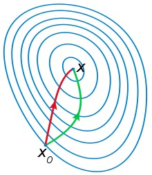

<!DOCTYPE html>
<html lang="zh-CN">
<head><meta name="generator" content="Hexo 3.8.0">
  <!-- hexo-inject:begin --><!-- hexo-inject:end --><meta charset="utf-8">
  
  <title>梯度下降法与牛顿法 | Sm1les&#39;s blog</title>
  <meta name="viewport" content="width=device-width, initial-scale=1, maximum-scale=1">
  <meta name="description" content="梯度下降法的泰勒公式推导[1]：梯度下降法的目标是使得$f(x_t+\Delta x )&amp;lt;f(x_t)$，由泰勒公式可知，$f(x)$在$x_t$点的一阶泰勒展开为： f(x) = f(x_t)+f’(x_t)(x-x_t)则 f(x_{t+1}) = f(x_t)+f’(x_t)(x_{t+1}-x_t)又$x_{t+1}$可等价写作$x_t + \Delta x$，则上式可化为： f(x">
<meta name="keywords" content="梯度下降法,牛顿法">
<meta property="og:type" content="article">
<meta property="og:title" content="梯度下降法与牛顿法">
<meta property="og:url" content="http://sm1les.com/2019/03/01/gradient-descent-and-newton-method/index.html">
<meta property="og:site_name" content="Sm1les&#39;s blog">
<meta property="og:description" content="梯度下降法的泰勒公式推导[1]：梯度下降法的目标是使得$f(x_t+\Delta x )&amp;lt;f(x_t)$，由泰勒公式可知，$f(x)$在$x_t$点的一阶泰勒展开为： f(x) = f(x_t)+f’(x_t)(x-x_t)则 f(x_{t+1}) = f(x_t)+f’(x_t)(x_{t+1}-x_t)又$x_{t+1}$可等价写作$x_t + \Delta x$，则上式可化为： f(x">
<meta property="og:locale" content="zh-CN">
<meta property="og:image" content="http://sm1les.com/2019/03/01/gradient-descent-and-newton-method/gdandnewton.jpg">
<meta property="og:updated_time" content="2019-04-07T05:35:53.332Z">
<meta name="twitter:card" content="summary">
<meta name="twitter:title" content="梯度下降法与牛顿法">
<meta name="twitter:description" content="梯度下降法的泰勒公式推导[1]：梯度下降法的目标是使得$f(x_t+\Delta x )&amp;lt;f(x_t)$，由泰勒公式可知，$f(x)$在$x_t$点的一阶泰勒展开为： f(x) = f(x_t)+f’(x_t)(x-x_t)则 f(x_{t+1}) = f(x_t)+f’(x_t)(x_{t+1}-x_t)又$x_{t+1}$可等价写作$x_t + \Delta x$，则上式可化为： f(x">
<meta name="twitter:image" content="http://sm1les.com/2019/03/01/gradient-descent-and-newton-method/gdandnewton.jpg">
  
  
    <link rel="icon" href="/favicon.ico">
  
  <link rel="stylesheet" href="/css/typing.css">
  <link rel="stylesheet" href="/css/donate.css">
  
  
  <link rel="stylesheet" href="https://cdn.jsdelivr.net/npm/disqusjs@1.1/dist/disqusjs.css"><!-- hexo-inject:begin --><!-- hexo-inject:end -->
  
</head>
</html>
  
    
      <body>
    
  
      <!-- hexo-inject:begin --><!-- hexo-inject:end --><div id="container" class="container">
        <article id="post-gradient-descent-and-newton-method" class="article article-type-post" itemscope itemprop="blogPost">
  <header id="header" class="header">
  <nav class="mobile-nav">
    <h1 class="nickname">:)s</h1>
    <ul class="mobile-nav-menu">
      <label for="mobile-menu-toggle"><a>&#9776; Menu</a></label>
      <input type="checkbox" id="mobile-menu-toggle">
      <ul class="mobile-nav-link">
        
        <a href="/">Home</a>
        
        <a href="/archives">Archives</a>
        
        <a href="/about">About</a>
        
      </ul>
    </ul>
  </nav>
	
		<nav id="main-nav" class="main-nav nav-left">
	
	
	  <a class="main-nav-link" href="/">Home</a>
	
	  <a class="main-nav-link" href="/archives">Archives</a>
	
	  <a class="main-nav-link" href="/about">About</a>
	
  </nav>
</header>

  <hr>
  <div class="article-inner">
    

    
      <header class="article-header">
        
  
    <h1 class="article-title" itemprop="name">
      梯度下降法与牛顿法
    </h1>
  

      </header>
    
    <div class="article-entry typo" itemprop="articleBody">
      
        <h3 id="梯度下降法的泰勒公式推导-1-："><a href="#梯度下降法的泰勒公式推导-1-：" class="headerlink" title="梯度下降法的泰勒公式推导[1]："></a>梯度下降法的泰勒公式推导<sup><a href="#ref1">[1]</a></sup>：</h3><p>梯度下降法的目标是使得$f(x_t+\Delta x )&lt;f(x_t)$，由泰勒公式可知，$f(x)$在$x_t$点的一阶泰勒展开为：</p>
<script type="math/tex; mode=display">f(x) = f(x_t)+f’(x_t)(x-x_t)</script><p>则</p>
<script type="math/tex; mode=display">f(x_{t+1}) = f(x_t)+f’(x_t)(x_{t+1}-x_t)</script><p>又$x_{t+1}$可等价写作$x_t + \Delta x$，则上式可化为：</p>
<script type="math/tex; mode=display">f(x_t + \Delta x) = f(x_t)+f’(x_t) \cdot \Delta x</script><p>所以要想使得$f(x_t+\Delta x)$&lt;$f(x_t)$，$f’(x_t)\cdot\Delta x$必须小于0，此时$f’(x_t)$为定值，$\Delta x$为可变部分，于是可以令$\Delta x = -\eta \cdot f’(x_t)$，其中$\eta&gt;0$，则</p>
<script type="math/tex; mode=display">f’(x_t) \cdot \Delta x= -\eta(f’(x_t))^2<0</script><p>由此可以推得当$\Delta x = -\eta \cdot f’(x_t)$时，$f(x_t+\Delta x )&lt;f(x_t)$恒成立。</p>
<h3 id="牛顿法的泰勒公式推导-2-："><a href="#牛顿法的泰勒公式推导-2-：" class="headerlink" title="牛顿法的泰勒公式推导[2]："></a>牛顿法的泰勒公式推导<sup><a href="#ref2">[2]</a></sup>：</h3><p>对于无约束的<strong>凸优化</strong>问题</p>
<script type="math/tex; mode=display">\min\limits_{\boldsymbol{x} \in \mathbb{R}^n}f(\boldsymbol{x})</script><p>其中$\boldsymbol{x}^*$为目标函数的最小值点，也是极小值点，牛顿法利用极小值点的必要条件</p>
<script type="math/tex; mode=display">\nabla f(\boldsymbol{x}^*)=\boldsymbol{0}</script><p>从点$\boldsymbol{x}^t$开始，求$ f(\boldsymbol{x})$在$\boldsymbol{x}^t$点的二阶泰勒展开式的极小值点（仅当$\boldsymbol{x}^{t}$点的海赛矩阵（Hessian matrix）为正定矩阵时），作为下一次（第$t+1$次）的迭代值$\boldsymbol{x}^{t+1}$，直到某次迭代值$\boldsymbol{x}^{t+1}$使得$\parallel\nabla f(\boldsymbol{x}^{t+1})\parallel&lt;\epsilon$时停止迭代，其中$\epsilon$为自定义的精度要求，具体迭代步骤如下，由多元函数的泰勒展开式<sup><a href="#ref3">[3]</a></sup>可得$f(\boldsymbol{x})$在$\boldsymbol{x}^{t}$点的二阶泰勒展开式为：</p>
<script type="math/tex; mode=display">f(\boldsymbol{x})=f(\boldsymbol{x}^t)+g_t^T \cdot (\boldsymbol{x}-\boldsymbol{x}^t)+\cfrac{1}{2}(\boldsymbol{x}-\boldsymbol{x}^t)^T \cdot H_t \cdot (\boldsymbol{x}-\boldsymbol{x}^t)</script><p>其中$g_t$为$f(\boldsymbol{x})$在$\boldsymbol{x}^{t}$点的梯度值，$H_t$为$f(\boldsymbol{x})$在$\boldsymbol{x}^{t}$点的海赛矩阵值。对上式求导并令其等于$\boldsymbol{0}$可得：</p>
<script type="math/tex; mode=display">g_t + H_t \cdot (\boldsymbol{x}-\boldsymbol{x}^t)=\boldsymbol{0}</script><p>解得$\boldsymbol{x}=\boldsymbol{x}^t-H_t^{-1}g_t$，令其为下一次的迭代值，即$\boldsymbol{x}^{t+1}=\boldsymbol{x}^t-H_t^{-1}g_t$。<br>【注】：</p>
<ul>
<li>牛顿法是经典的求根方法，在最优化问题里，通常最值点也是极值点，所以目标函数$f(x)$的一阶导函数$f’(x)$在最值点处一定等于0，此时求目标函数$f(x)$最小值的问题转化为了求目标函数的一阶导函数$f’(x)$的根的问题<sup><a href="#ref4">[4]</a></sup>；</li>
<li>关于牛顿法和梯度下降法的效率对比：从本质上去看，牛顿法是二阶收敛，梯度下降是一阶收敛，所以牛顿法就更快。如果更通俗地说的话，比如你想找一条最短的路径走到一个盆地的最底部，梯度下降法每次只从你当前所处位置选一个坡度最大的方向走一步，牛顿法在选择方向时，不仅会考虑坡度是否够大，还会考虑你走了一步之后，坡度是否会变得更大。所以，可以说牛顿法比梯度下降法看得更远一点，能更快地走到最底部。（牛顿法目光更加长远，所以少走弯路；相对而言，梯度下降法只考虑了局部的最优，没有全局思想。）根据wiki上的解释，从几何上说，牛顿法就是用一个二次曲面去拟合你当前所处位置的局部曲面，而梯度下降法是用一个平面去拟合当前的局部曲面，通常情况下，二次曲面的拟合会比平面更好，所以牛顿法选择的下降路径会更符合真实的最优下降路径<sup><a href="#ref5">[5]</a></sup>。<center>
<br>
红色为牛顿法的迭代路径，绿色为梯度下降法的迭代路径
</center>

</li>
</ul>
<h3 id="参考文献："><a href="#参考文献：" class="headerlink" title="参考文献："></a>参考文献：</h3><p><span id="ref1">[1] <a href="https://zhuanlan.zhihu.com/p/36564434" target="_blank" rel="noopener">梯度下降法 —— 经典的优化方法</a></span><br><span id="ref2">[2]  李航.《统计学习方法》</span><br><span id="ref3">[3] <a href="https://blog.csdn.net/red_stone1/article/details/70260070" target="_blank" rel="noopener">多元函数的泰勒(Taylor)展开式</a></span><br><span id="ref4">[4] <a href="http://sofasofa.io/forum_main_post.php?postid=1000966" target="_blank" rel="noopener">牛顿法到底是一阶优化算法还是二阶优化算法？</a></span><br><span id="ref5">[5] <a href="http://www.cnblogs.com/maybe2030/p/4751804.html" target="_blank" rel="noopener">常见的几种最优化方法</a></span></p>

      
      
    </div>
    <footer class="article-footer">
      <ul class="article-meta">
        <li>
          <span class="label">本文作者：Sm1les</span>
        </li>
        <li>
          <span class="label">本文链接：<a href="http://sm1les.com/2019/03/01/gradient-descent-and-newton-method/">http://sm1les.com/2019/03/01/gradient-descent-and-newton-method/</a></span>
        </li>
        <li>
          <span class="label">版权声明：本作品采用<a rel="license" href="http://creativecommons.org/licenses/by-nc-nd/3.0/">CC BY-NC-ND 3.0 许可协议</a>进行许可，转载请注明出处！</span>
        </li>
        <li>
          <span class="label">发布日期:</span>
          <a href="/2019/03/01/gradient-descent-and-newton-method/" class="article-date">
  <time datetime="2019-03-01T03:21:35.000Z" itemprop="datePublished">2019-03-01</time>
</a>

        </li>
        <li>
          <span class="label">更新日期:</span>
          <a href="/2019/03/01/gradient-descent-and-newton-method/" class="article-date">
  <time datetime="2019-04-07T05:35:53.332Z" itemprop="dateUpdated">2019-04-07</time>
</a>

        </li>
        
          <li>
            <span class="label">分类:</span>
            
  <div class="article-category">
    <a class="article-category-link" href="/categories/最优化/">最优化</a>
  </div>


          </li>
        
        
          <li>
            <span class="label">标签:</span>
            
  <ul class="article-tag-list"><li class="article-tag-list-item"><a class="article-tag-list-link" href="/tags/梯度下降法/">梯度下降法</a></li><li class="article-tag-list-item"><a class="article-tag-list-link" href="/tags/牛顿法/">牛顿法</a></li></ul>


          </li>
        
        <hr>
      </ul>
    </footer>
  </div>
  
    
<nav id="article-nav" class="article-nav">
  
    <a href="/2019/03/13/expectation-maximization/" id="article-nav-newer" class="article-nav-link-wrap newer">
      <strong class="article-nav-caption">Newer</strong>
      <div class="article-nav-title">
        
          EM算法的两种推导方式
        
      </div>
    </a>
  
  
    <a href="/2019/01/17/logistic-regression-and-maximum-entropy/" id="article-nav-older" class="article-nav-link-wrap older">
      <strong class="article-nav-caption">Older</strong>
      <div class="article-nav-title">Logistic回归与最大熵</div>
    </a>
  
</nav>


  
</article>


  <section id="comments" class="comments">
    <div id="disqus_thread"></div>
  </section>


      </div>
      
    <footer id="footer" class="post-footer footer">
      
      <hr>
      <div id="footerContent" class="footer-content">
        <p>© 2019 <strong>Sm1les</strong> Powered by <strong>Hexo</strong> Theme © <strong>GeekPlux</strong></p>


      </div>
    </footer>

      


<script src="https://cdn.jsdelivr.net/npm/disqusjs@1.1/dist/disqus.js"></script>
<script>
  var dsqjs = new DisqusJS({
      shortname: 'sm1les',
      siteName: 'sm1les',
      api: 'https://disqus.skk.moe/disqus/',
      apikey: 'NpJpGPceHYYAG6eEwrFFG6HE7SvnS5xaupPIG6CSTE67oyuOmQPTiFHMLtj3KkxO',
      admin: 'sm1lex,',
      adminLabel: 'Loading...'
  });
  </script>


<script src="https://cdn.jsdelivr.net/npm/jquery@3/dist/jquery.min.js"></script>
<script src="https://cdn.jsdelivr.net/npm/clipboard@2/dist/clipboard.min.js"></script>


  <link rel="stylesheet" href="https://cdn.jsdelivr.net/npm/@fancyapps/fancybox@3/dist/jquery.fancybox.min.css">
  <script src="https://cdn.jsdelivr.net/npm/@fancyapps/fancybox@3/dist/jquery.fancybox.min.js"></script>


<script src="/js/typing.js"></script>
<!--[if lt IE 9]><script src="https://cdn.jsdelivr.net/npm/html5shiv@3/dist/html5shiv.min.js"></script><![endif]-->


  <!-- Global site tag (gtag.js) - Google Analytics -->
  <script async src="https://www.googletagmanager.com/gtag/js?id=UA-131477813-1"></script>
  <script>
    window.dataLayer = window.dataLayer || [];
    function gtag(){dataLayer.push(arguments);}
    gtag('js', new Date());
    gtag('config', 'UA-131477813-1');
  </script>
  <!-- End Google Analytics -->
  


    </div>
  <script type="text/x-mathjax-config">
    MathJax.Hub.Config({
        tex2jax: {
            inlineMath: [ ["$","$"], ["\\(","\\)"] ],
            skipTags: ['script', 'noscript', 'style', 'textarea', 'pre', 'code'],
            processEscapes: true
        }
    });
    MathJax.Hub.Queue(function() {
        var all = MathJax.Hub.getAllJax();
        for (var i = 0; i < all.length; ++i)
            all[i].SourceElement().parentNode.className += ' has-jax';
    });
</script>
<script src='https://cdnjs.cloudflare.com/ajax/libs/mathjax/2.7.5/MathJax.js?config=TeX-MML-AM_CHTML' async></script><!-- hexo-inject:begin --><!-- hexo-inject:end -->
</body>
</html>
